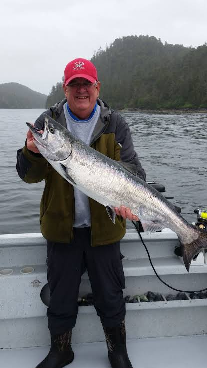
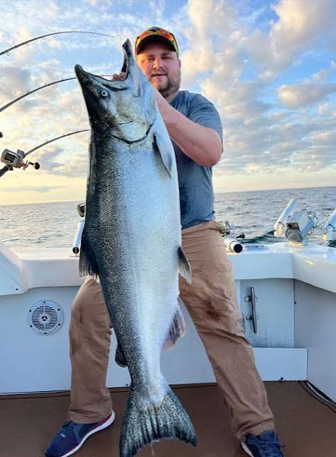

Meet Our Captains
Our Captains guarantee a fun filled and fruitful charter. They are very expirenced with all age groups and group sizings. Rest assured you will be catching fish and staying safe on the ocean with these two.
Experience on the Water
Our captains know the local fishing areas and work hard to make every trip enjoyable. Whether you are new to fishing or have years of experience, our captains are here to help.
Meet the Crew

Captain James
Captain James has over 20 years operating a charter, boasting 2 state records one for black fish and one for fluke.

Captain Michael
Captain Michael has been with Waterford Charters for 8 years now. He offers a family friendly trip and is great with kids who may be scared of the fish caught.